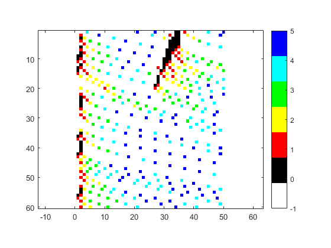
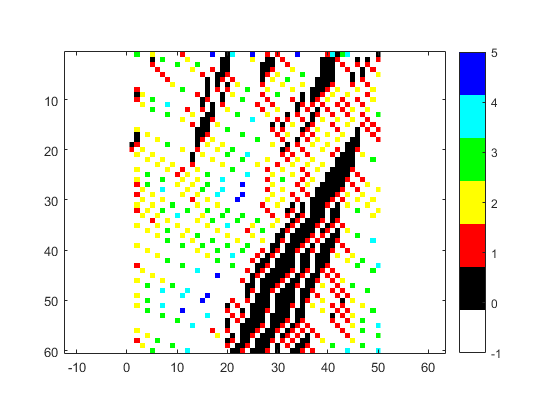
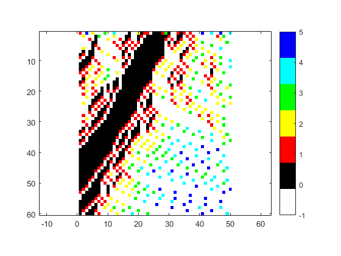
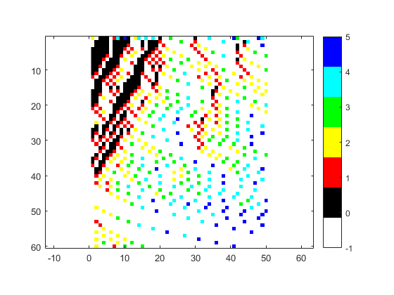
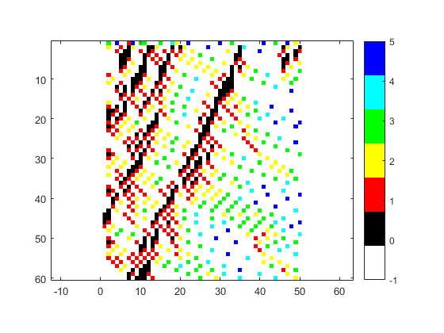

clear;
clc;
X = importdata('test_data.txt');
mymap = [1 1 1
0 0 0
1 0 0
1 1 0
0 1 0
0 1 1
0 0 1];
new_car_prob = 0.4;
dec_prob = 0.4;
for pub=1:5
full_road = zeros(60,60);
if(pub<2)
road = X(:,pub)';
else
indexr = randsample(50,12)';
road(indexr) = randi([0 5],1,12);
end
[gen,~] = size(full_road);
[~,c] = size(road);
full_road(1,:)=road;
for i=2:gen
if ((road(1) == -1) && (rand(1)>1-new_car_prob))
road(1) = 1;
end
road(51:60) = -1;
for j=c-10:-1:1
moved = 0;
speed = road(j);
if(speed>=0)
if(speed<5)
if(road(j+1:j+speed+1)==-1)
road(j) = -1;
road(j+speed) = speed + 1;
next_speed = road(j+speed);
moved = 1;
end
end
if(road(j+1:j+speed)==-1)
road(j) = -1;
road(j+speed) = speed;
next_speed = road(j+speed);
moved = 1;
end
if(moved)
if(max(road(j+speed+1:j+speed+next_speed))~=-1)
found = 0;
count = 0;
for k=j+1+speed:j+speed+next_speed
count = count+1;
if((~found)&&(road(k)>=0))
found = 1;
road(j+speed) = count-1;
end
end
end
else
if(max(road(j+1:j+speed))~=-1)
found = 0;
count = 0;
for k=j+1:j+speed
count = count+1;
if((~found)&&(road(k)>=0))
found = 1;
road(j) = -1;
road(j+count-1) = 0;
end
end
end
end
end
end
for j=c-10:-1:1
rand_dec = road(j);
if(rand_dec>0 && rand_dec<=5)
if ((road(j) ~= -1) && (rand(1)>1-dec_prob))
road(j) = rand_dec-1;
end
end
end
full_road(i,:) = road;
end
figure
drawnow;
imagesc(full_road(:,1:50));
colormap(mymap); axis equal;
colorbar
end
    